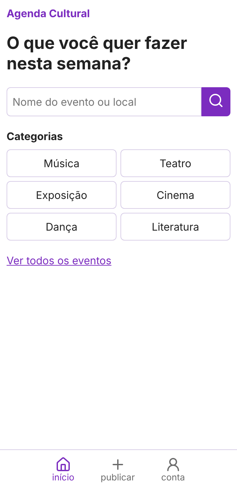
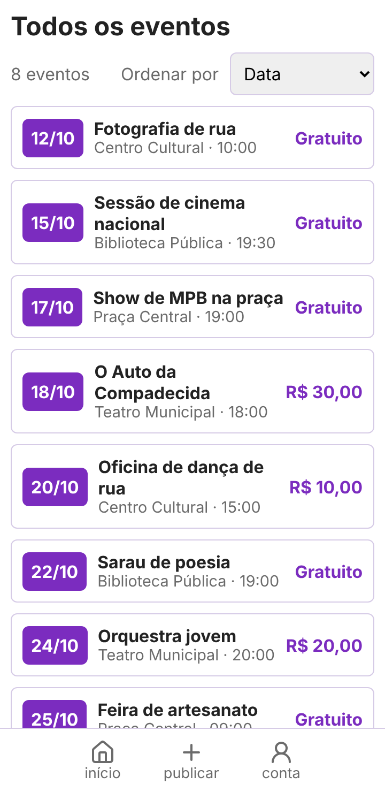
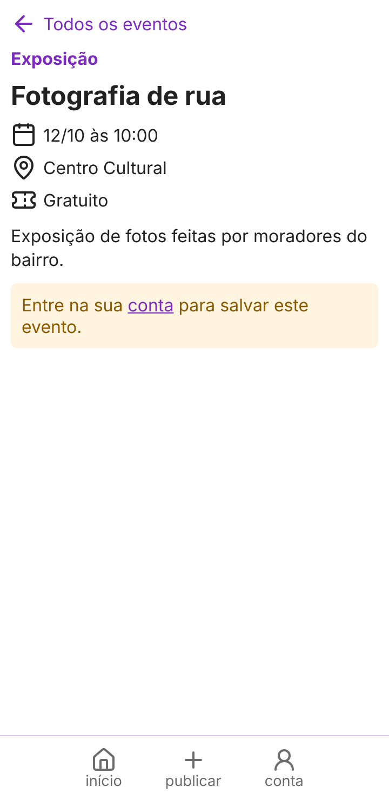
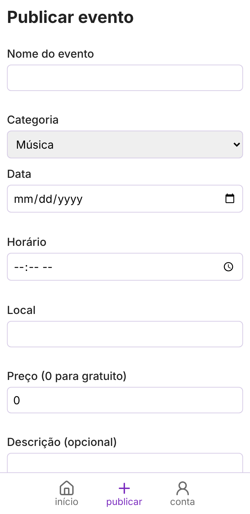
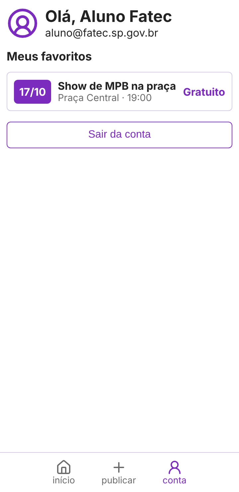
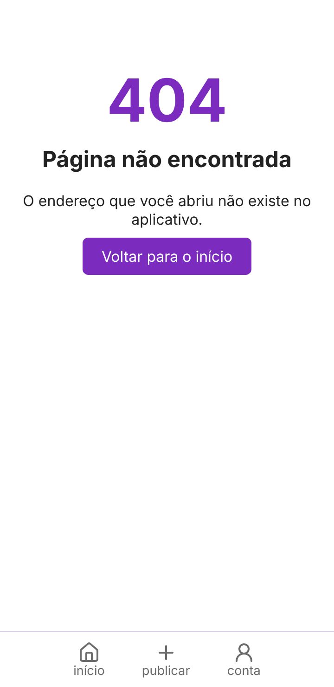
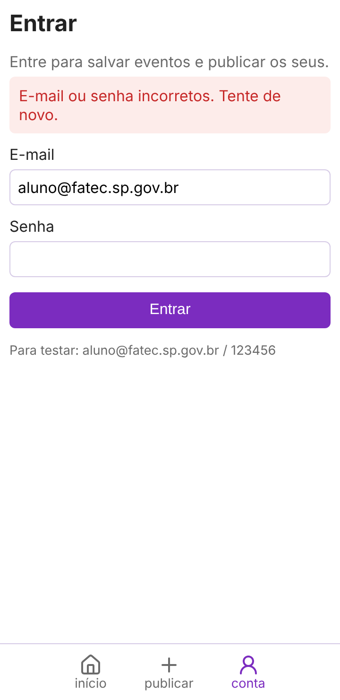
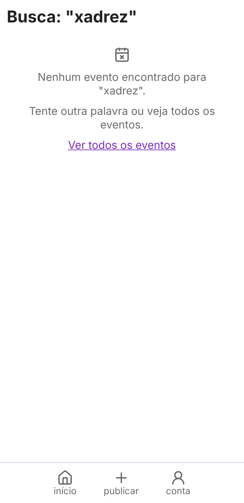

Desafio 1 · O mesmo esqueleto, outro negócio · Relatório de construção
Integrantes: Carlos, Gabriel, Tabata · Repositório: github.com/Carlos-Ale-Andrade/agenda-cultural
Pergunta que o app responde: "O que tem para fazer na cidade nesta semana, quando, onde e quanto custa?" A informação sobre shows, peças e exposições fica espalhada em cartazes, perfis de redes sociais e grupos de mensagem. O app junta tudo em uma lista que dá para filtrar.
Cada conceito do KiOferta e o que ele virou na Agenda Cultural:
| No KiOferta | Na Agenda Cultural | Arquivo |
|---|---|---|
| Produto em promoção | Evento cultural | dadosMockados/eventos.js |
| Mercado onde está a oferta | Local do evento (teatro, praça, biblioteca) | campo local |
| Preço na etiqueta / distância | Data, horário e preço do ingresso ("Gratuito" quando 0) | campos data, hora, preco |
| Categorias (Mercearia, Carnes, Bebidas...) | Categorias (Música, Teatro, Exposição, Cinema, Dança, Literatura) | dados/eventos.js |
| Radar de Promoções (buscar) | Início, com busca e categorias | paginas/inicio/ |
| Lista de produtos | Resultados, com ordenação e estado vazio | paginas/resultados/ |
| Mapa do produto escolhido | Detalhe do evento | paginas/detalhe/ |
| Enviar promoção | Publicar evento | paginas/publicar/ |
| Favorito / Conta | Conta com login, com os favoritos dentro | paginas/conta/, sessao/sessao.js |
| (não existia) | Rota inexistente (404) | paginas/naoEncontrada/ |
src/
├── index.html página única: navbar embaixo e <main id="app">
├── css/
│ ├── tokens.css cores, espaços e bordas usados por todo o app
│ ├── base.css reset, botões, campos e mensagens de erro/aviso/vazio
│ └── navbar.css barra de navegação inferior
└── js/
├── main.js roteador: lê o hash, separa o parâmetro e chama a tela
├── rotas/rotas.js lista das telas; também monta a navbar
├── navbar/navbar.js desenha a navbar a partir das rotas e marca a atual
├── sessao/sessao.js login, sair, usuário logado e favoritos por usuário
├── dados/eventos.js junta mockados + publicados, busca por id, checa repetido
├── dadosMockados/ eventos.js (8 eventos) e usuarios.js (2 usuários de teste)
├── utils/ armazenamento.js (localStorage) e formatar.js (data, preço, escapar)
└── paginas/ uma pasta por tela, cada uma com seu .js e seu .css
inicio/ resultados/ detalhe/ publicar/ conta/ naoEncontrada/
1. O parâmetro vai dentro do hash (#detalhe/3, #resultados/Música). No KiOferta o produto era passado como objeto de uma função para outra e se perdia quando o hash mudava. Com o id no endereço, o roteador consegue redesenhar qualquer tela sozinho, o botão voltar funciona e os cartões viram links simples.
2. Sessão, favoritos e eventos publicados ficam no localStorage. O trabalho pede um app sem backend. Os usuários de teste ficam em um arquivo mockado, e o módulo sessao.js esconde esse detalhe das telas. Se um dia existir um servidor, só esse módulo e o dados/eventos.js mudam.
3. Cada tela tem a própria pasta e o próprio CSS, todos usando tokens.css. Assim cada integrante mexe só nos seus arquivos e as cores continuam iguais em todo o app. O rotas.js e o navbar.js são o ponto de encontro e só mudam com o grupo combinado.
Descartado: uma tela separada de Favoritos, como no KiOferta. Chegamos a fazer essa tela, mas favoritar só faz sentido para quem está logado, e o enunciado pede seis telas. Por isso os favoritos foram para dentro da Conta: quem não entrou vê o convite para fazer login, e quem entrou vê a lista.
| Integrante | Responsabilidade | Entregáveis | Commits |
|---|---|---|---|
| Carlos | Dados e descoberta | Dados mockados, tela de início e tela de resultados, com busca e ordenação | [nº] |
| Gabriel | Detalhe e publicação | Tela de detalhe, formulário de publicar, validações e aviso de registro repetido | [nº] |
| Tabata | Conta e fundação | tokens.css e base.css, módulo de sessão, tela de conta e tela de rota inexistente | [nº] |
1. A tela abria toda em branco.
O erro: ao abrir o index.html pelo Live Server, nada aparecia.
O que achamos que era: caminho errado do script, CSS quebrado, problema do navegador ou erro nas telas novas. Testamos cada hipótese e nenhuma resolveu.
O que era de fato: o console (F12) mostrava Failed to resolve module specifier "lucide". O import ... from 'lucide' só funciona passando pelo Vite, que sabe procurar o pacote dentro do node_modules. Passamos a usar npm run dev e colocamos base: './' no vite.config.ts para a pasta dist/ funcionar em qualquer lugar.
2. Clicar no cartão não abria o detalhe.
O erro: o clique mostrava "Escolha um produto." em vez do evento.
O que achamos que era: que o clique não estava registrado. Mas o console.log mostrou que estava.
O que era de fato: eram dois problemas. O cartão não tinha o atributo data-nome, então o find devolvia undefined. E, mesmo corrigindo isso, a tela trocava o hash para #mapa depois de desenhar, o roteador redesenhava a tela sem o evento e o resultado era apagado. A solução foi colocar o id no hash (decisão 1).
As outras seis dificuldades, com todas as tentativas, estão em docs/diario-de-bordo.md: ícones que sumiam, npm travado, fuso horário na validação da data, preço vindo como texto, HTML digitado pelo usuário e o formulário que não limpava.
usuarios.js) e não existe cadastro. Para ser de verdade, precisaria de um servidor, e o trabalho pede um app sem backend.






